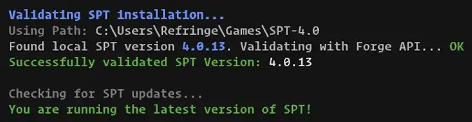
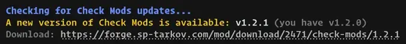
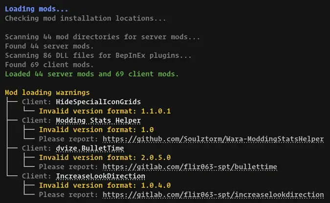
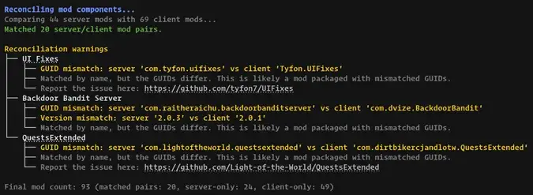
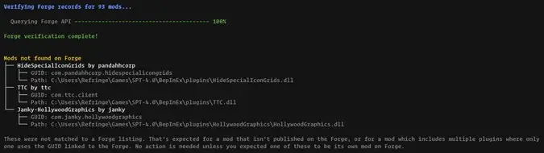
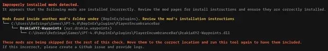
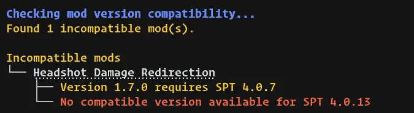
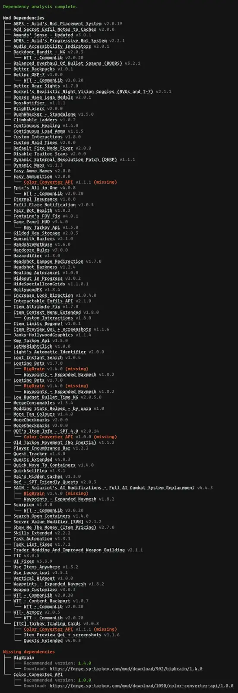
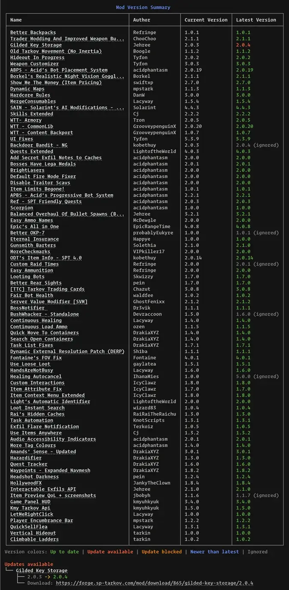
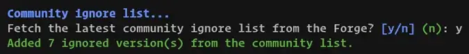

Check Mods
- Downloads
- 38,972
- Favourites
- 117
- Mod lists
- 159
Check Mods is your first step in troubleshooting mod issues. This command-line tool validates your Single Player THE CITY mod installation against the official Forge API, giving you a complete picture of your mod setup’s health. It scans both server-side and client-side mods, matches them to their Forge listings, and identifies exactly what needs attention, whether that’s outdated versions, missing dependencies, or compatibility conflicts with your SPT version.
No setup, no configuration, and no API key required. Drop in the executable and run it.
Features
Check Mods provides the following features.
Notifies you when a new SPT version is available.

Checks whether a newer version of Check Mods itself is available on the Forge, and tells you whether that version supports your installed SPT version.

Loads local mods, pairs the server-side and client-side halves of the same mod, and matches them against the official Forge database. Warnings are shown when issues are found and are particularly useful for mod authors to help ensure that their mods meet the file format standards on the Forge.
Loading:

Reconciliation:

Verification:

Flags mods installed in the wrong place, such as a server mod sitting in the client plugins folder (or the reverse), and plugin folders that contain two or more unrelated mods.

Checks that each of your mods are flagged as compatible with the SPT version that they’re installed in. Provides links to versions which are compatible, if available.

Builds a complete dependency tree, which flags missing dependencies, and detects dependency conflicts. Provides links to missing dependencies, if available.

Provides a breakdown of each of the mod versions you have installed and the updates that are available that are compatible with your SPT version and do not break your dependencies. When updates are found, you can open every updatable mod’s Forge page in your browser at once from the end-of-run menu.

Dismiss updates you don’t want flagged, whether they’re false positives or updates you’re intentionally skipping. Your choices are remembered locally so they won’t nag you on future runs. You can optionally seed your list from a community-maintained list, and contribute your own dismissals back to help everyone else.

Documentation
Some important information you may need to know.
The install is dead-simple. Decompress the downloaded archive (the single .exe file) into the root folder of your SPT install. It should be in the same location as your EscapeFromTarkov.exe within your SPT directory. Run the file to begin the check.
To uninstall the tool, simply delete the .exe file from the root of the install, and optionally, the additional files mentioned in the next tab.
This mod saves files into your system’s %APPDATA%/SptCheckMods/ directory. There are currently two file types which are stored there.
- Rotating log files:
%APPDATA%/SptCheckMods/logs/checkmod.log - Ignored updates list:
%APPDATA%/SptCheckMods/ignored-updates.json
It should go without saying, but this mod makes external connections:
https://forge.sp-tarkov.com- Forge API for mod information. Required.https://forge-static.sp-tarkov.com- Community update ignore list. Optional.
There are no other network connections made. The source is available if you wish to independently verify or compile yourself.
Version
1.2.1
What’s Changed
- Improved mod compatibility detection
Shows a warning when a mod matches with the Forge, but the SPT version is not compatible. - Forge API pacing
Requests to the Forge are now “smooth” to avoid tripping Forge rate limits before they are triggered. - Mod update dependency changes
Shows a warning when a mod update is available and its dependencies have changed and need to be modified. - Improved community ignore list sharing
Only prompt and share ignored version updates that the community list lacks. - Open updates in browser
There is now a menu including the option to open all of the updated mods’ pages in your browser. - Updated output formatting
The output formatting has been updated to be more easily readable. - Native-DLL scan warnings
The warnings about native-DLL scans have been moved to a debug level log and are no longer shown in the regular output.
Version
1.2.0
What’s Changed
- Dismiss false-positive update prompts
Mods that get incorrectly flagged as “update available” can now be ignored so they stop nagging on every run. Ignored entries are persisted, with an opt-in remote list of known false positives shared across users. Includes a new in-app workflow to report a false positive. - No more Forge API key required
Forge API authentication has been removed entirely. The app no longer needs (or prompts for) an API key (the Forge API is now open). - Forge API rate limiting
Requests are now throttled to stay within Forge’s published rate limits. - Self-update check
The executable is now versioned from the git release tag, and on startup the app checks Forge for a newer Check Mods release and lets you know when one is available. - Detect misplaced & cross-installed mods
The scanner now flags mods installed in the wrong location.
Version
1.0.1
What’s Changed
- fix: resolve Ctrl-C hard-lock during API key prompt by @refringe in PR 21
- fix: prevent DLL file locking during mod scanning by @refringe in PR 23
- chore: update .gitignore with .vs gibberish by @refringe in 8051857
- fix: properly display blocked mod update information by @refringe in PR 32
- feat: add GitHub issue templates and PR template by @refringe in 3bb40b1
- chore: updated dependancies by @refringe
Version
1.0.0
Full send!
Better scanning, less errors, and you no longer need .NET 10.
Features
- Windows builds are now automatically compressed into a zip archive.
Bug Fixes
- Fixed assembly scanning errors. Handle assemblies with unloadable types during server mod metadata extraction.
- Fixed service scope validation errors. Changed scoped services to transient to resolve possible DI scope validation issues.
- Fixed .NET compatibility. Downgraded to .NET 9 for better compatibility with SPT server.
Internal
- Replaced manual dependency injection with SPTarkov.DI’s attribute-based registration.
- Fixed cross-platform build compatibility by replacing Unix commands with MSBuild tasks.
- Added
IApiKeyProvidersingleton to persist API keys across transient service instances.
Version
1.0.0-beta.1
Beta 1 Release
- Rewrite for SPT 4.0 compatability
- Drops SPT 3.11 support
This version requires that you have the .NET Runtime 10.0.0 installed. It will flash open and immediatly close if you do not have it installed.
Looking for general feedback… what works and what does doesn’t. Please only give feedback on issues with the tool and not for mod issues; for example, the tool reporting the incorrect mod version (this is a mod author problem).
Known Issues:
Could not read mod DLL FikaServer.dll. Reason: Unable to load one or more of the requested types.- Untested on Linux build
- Untested on Fika headless install